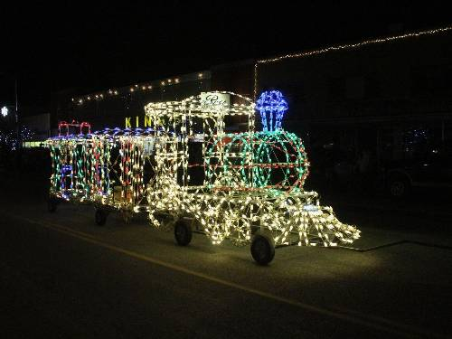

Festivities
For several years the city held a "Napoleon Dynamite Festival" in the summer. Many of the featured festival themes related to events occurring during the film. For example: Tetherball Tournament, Tater Tot Eating Contest, Moon Boot Dance, Impersonation, Look-A-Like Contest, Football Throwing Contest and more. In 2004 there was a single day event that drew approximately 300 people. Although this was not a large crowd, it did help raise $1,500 for the Preston School District Education Foundation. In 2005 an estimated 6,000 people attended the event, but that number dropped to an estimated 400 people in 2006. There are no plans for reviving the event. The 2007 and 2008 event was held along with the 'That Famous Preston Night Rodeo' in Preston. 'That Famous Preston Night Rodeo' is usually held in late July, along with the Franklin County parade. The rodeo's name ('That Famous Preston Night Rodeo') comes from it being the first rodeo held during night time. It includes many events such as bull riding, barrel racing, and other popular events. The Franklin county parade includes floats and advertisements of local businesses. The rodeo and parade remain one of the town's most popular local events and traditions.
Each year Preston holds the "Idaho Festival of Lights", which starts the day after Thanksgiving and goes until December 31. The festival was started by two local business men (Wayne Bell and Walter Ross) along with many other community organizations to help celebrate Christmas within the community. The festival consists of a lighted parade, fireworks, and displays in the city park. The merchants along the main street of Preston have their store fronts decorated with Christmas lights during the festival. A key event of the festival is the International Bed Race, which is held on the Saturday following Thanksgiving on the main street of Preston. Additional events are a kids' parade and free movie.